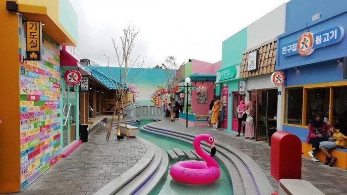
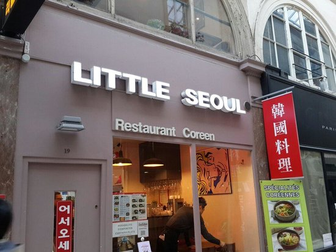
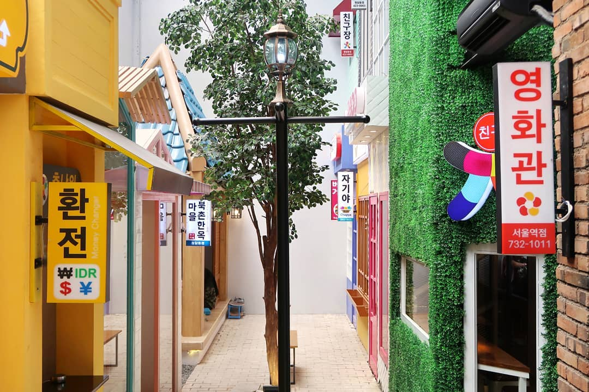

Little Seoul Bandung

Dibangunnya Little Seoul Bandung atau Kampung Korea Bandung adalah hasil kerjasama dengan warga Kota Bandung dan
Kota Seoul untuk meningkatkan kerjasama pariwisata masing-masing. Little Seoul Bandung sendiri berlokasi di Jalan
Sawunggaling No.10, Tamansari, Kec. Bandung Wetan, Kota Bandung.
Bukan hanya nuansanya saja yang Korea banget, semua kuliner yang disajikan pun adalah menu autentik Korea. Ya, di
sini kamu akan dimanjakan dengan seluruh kuliner khas Negeri Ginseng yang terkenal enak dan kaya rasa.
Mulai dari makanan utamanya hingga jajanan kaki limanya yang menggoda. Sebut saja corndog, hotteok, tteokbokki,
jjampong, bibimbab, odeng, hingga jjajangmyeon. Menariknya lagi, penyajian makanannya pun dibuat seperti di negara
aslinya.
Setelah dimanjakan dengan berbagai kuliner khas Negeri Ginseng, kamu bisa menelusuri Little Seoul Bandung. Perlu
kamu ketahui kalau tempat ini juga memiliki berbagai spot keren yang bisa kamu manfaatkan untuk berfoto.
Review



Resource
link: https://review.bukalapak.com/travel/little-seoul-bandung-109897